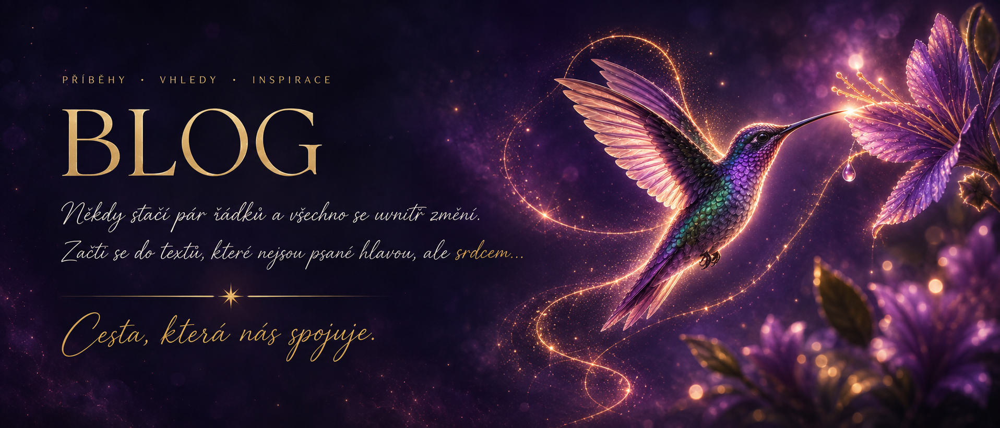

Ticho v hlavě
„Když mysl ztichne, život začne být konečně slyšet..“
Číst dál
19 příběhů a zastavení
„Když mysl ztichne, život začne být konečně slyšet..“
Číst dál„Nová identita nevzniká tím, že se staneme někým jiným, ale tím, že přestaneme opouštět to, kým už dávno jsme.“
Číst dál„Není okamžik, kdy víme všechno. Je to chvíle, kdy už nedokážeme dál předstírat, že nevidíme.““
Číst dál„Nejtěžší krok není něco získat, ale pustit to, co už nejsem.“
Číst dál„Když přijde čas, duše už ví.“
Číst dál„Odevzdání není kapitulace. Je to důvěra, že život ví víc než tvůj strach.“
Číst dál„Integrace nezačíná dalším léčením. Začíná ve chvíli, kdy tělo konečně ucítí bezpečí.“
Číst dál„Když se rozpadne všechno, co nejsi… začne se rodit to, kým opravdu jsi.“
Číst dál„Nehledáš odpověď. Hledáš odvahu vidět to, co je v Tobě dávno napsáno.“
Číst dál„Manifestace není jen sen na vision boardu. Je to proces, který mě skrze slzy a transformaci dovedl k vnitřnímu klidu, lásce a návratu domů.“
Číst dál„Víra není o tom vidět cestu, ale udělat první krok i tehdy, když ji nevidíš...“
Číst dál„Tehdy jsem věřila v dokonalý sen. Dnes vím, že opravdová síla je věřit sama v sebe.“
Číst dál„Když si dovolíš čas pro sebe, dáváš tím světu tu nejlepší verzi sebe.“
Číst dál„To, co hledáš venku, už dávno žije uvnitř Tebe.“
Číst dál„Krása se nerodí z dokonalosti, ale z odvahy být pravdivý sám k sobě...“
Číst dál„Učíš mě každým dnem být o trochu lepší...“
Číst dál„Není to náhoda, že to čteš právě teď – možná je to i Tvůj den, kdy začneš věřit víc sobě, než hlasům zvenčí.“
Číst dál„Když se na chvíli zastavím, dochází mi, jak moc se změnilo...“
Číst dál„Někdy stačí říct jedno upřímné NE, abychom konečně mohli říct ANO sami sobě.“
Číst dálTady končí slova... a začíná šepot duše.